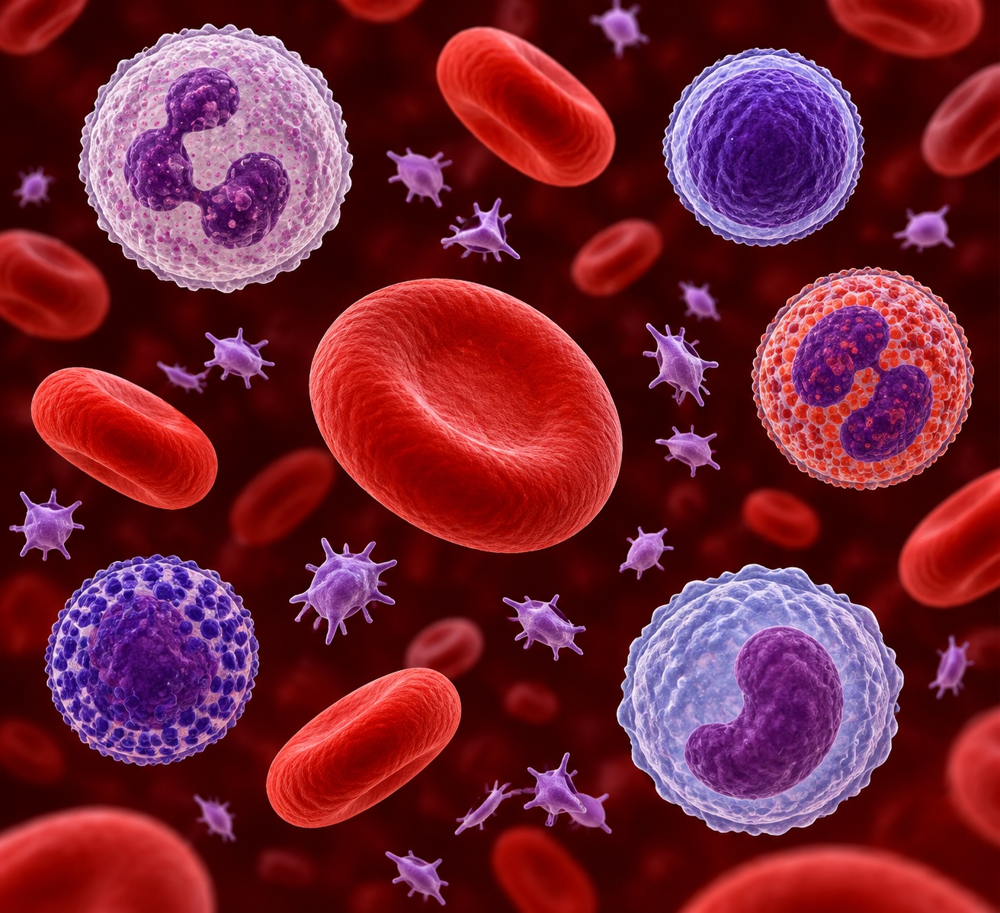
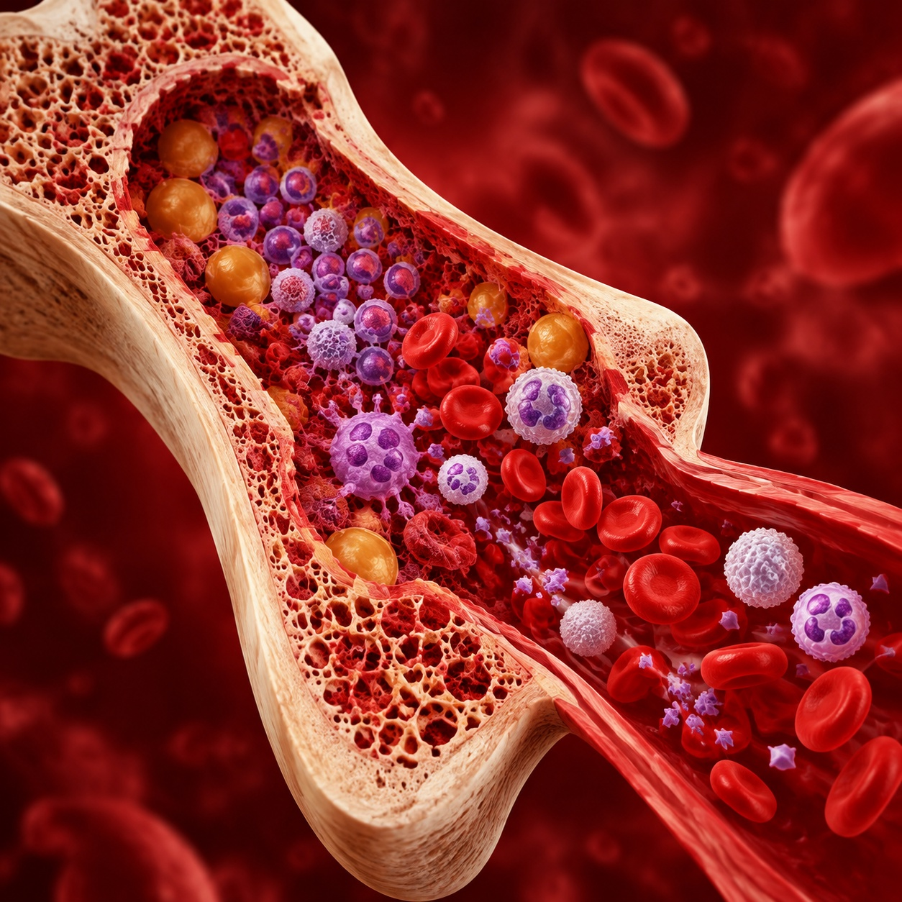
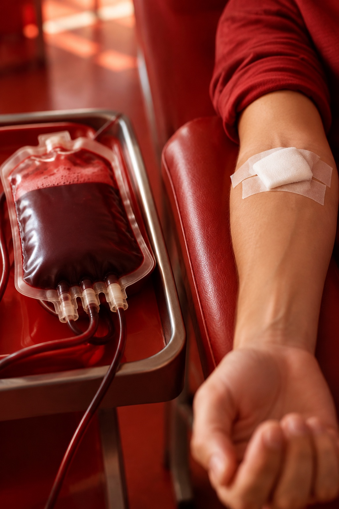
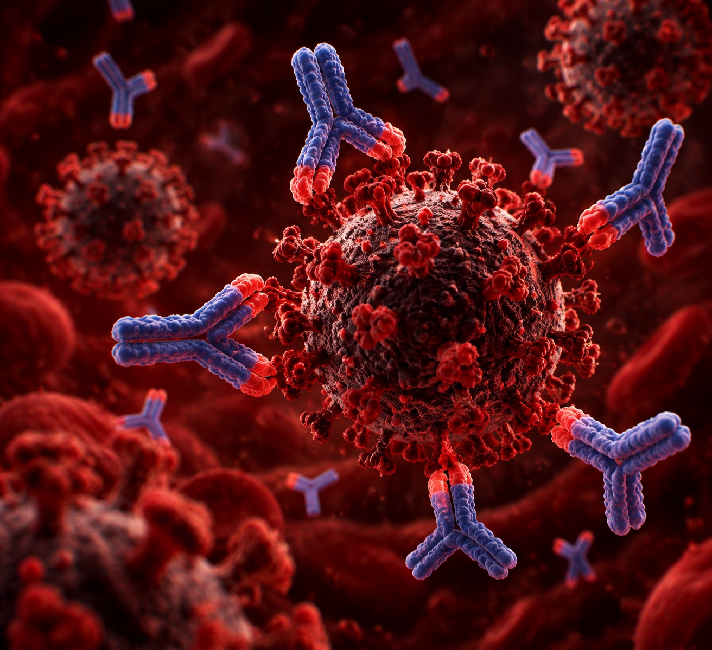
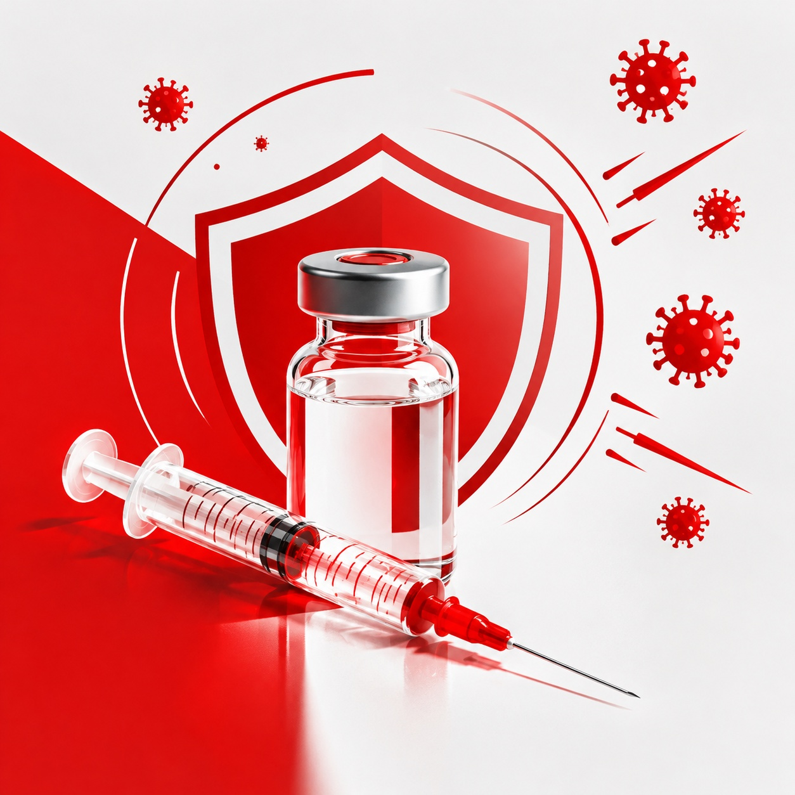

Uma viagem pelo rio vermelho que corre dentro de você — e pelo exército invisível que protege sua vida todos os dias.
O que é o sangue
Um adulto tem de 5 a 6 litros de sangue, cerca de 7% do peso do corpo. Ele é considerado um tecido conjuntivo líquido e é formado por dois componentes principais: o plasma (parte líquida) e os elementos figurados (as células e fragmentos de células).
Plasma (cerca de 55%) — líquido amarelado composto por ~90% de água, além de proteínas (albumina, globulinas, fibrinogênio), sais minerais, glicose, hormônios, vitaminas, gases e resíduos como a ureia.
Elementos figurados (cerca de 45%) — hemácias (quase todo esse volume, por isso o “hematócrito” fica entre 40% e 45%), leucócitos e plaquetas. Leucócitos e plaquetas juntos somam menos de 1%.

Hemácias, glóbulos brancos e plaquetas: os protagonistas desta história.
Galeria celular
Cada tipo celular tem forma e missão próprias. Os glóbulos brancos se dividem em granulócitos (neutrófilos, eosinófilos e basófilos) e agranulócitos (linfócitos e monócitos).
Também chamada eritrócito ou glóbulo vermelho. Disco bicôncavo, sem núcleo, cheio de hemoglobina. Função: transportar oxigênio dos pulmões aos tecidos e parte do gás carbônico de volta.
Trombócito: fragmento do megacariócito, sem núcleo. Função: coagulação — formam o “tampão” que fecha ferimentos e liberam fatores que ativam a cascata de coagulação.
O leucócito mais numeroso (55–70%), com núcleo de 3 a 5 lóbulos. Função: primeira linha contra bactérias e fungos, por fagocitose. Formam o pus.
Núcleo grande e redondo ocupando quase toda a célula (20–40%). Função: imunidade específica. Linfócitos B produzem anticorpos; T coordenam a defesa e destroem células infectadas; NK matam células tumorais e infectadas.
Núcleo com 2 lóbulos e grânulos alaranjados (1–4%). Função: combater parasitas (vermes) e modular reações alérgicas.
O mais raro (<1%), cheio de grânulos escuros. Função: liberar histamina (dilata vasos) e heparina (anticoagulante), participando de inflamações e alergias.
O maior leucócito (2–8%), núcleo em forma de rim. Função: fagocitose; ao entrar nos tecidos vira macrófago, que “come” micróbios e restos celulares e apresenta antígenos aos linfócitos.

A medula óssea vermelha: a “fábrica” do sangue.
Nascimento e morte
Todas as células sanguíneas são produzidas na medula óssea vermelha (processo chamado hematopoese), a partir de células-tronco. No adulto, ela fica principalmente nos ossos chatos: esterno, costelas, vértebras, bacia e crânio, e nas extremidades do fêmur e úmero. Os linfócitos também amadurecem e se multiplicam no timo, baço e linfonodos. No feto, fígado e baço também produzem sangue.
As hemácias velhas são hemolisadas (destruídas) principalmente no baço — o “cemitério das hemácias” — e também no fígado e na medula, por macrófagos. O ferro é reaproveitado e a hemoglobina vira bilirrubina, eliminada pela bile.
Uma hemácia vive em média 120 dias. As plaquetas vivem de 7 a 10 dias, e os neutrófilos apenas algumas horas a poucos dias.
Respiração
As hemácias transportam principalmente o oxigênio (O₂), preso ao ferro da hemoglobina (formando a oxi-hemoglobina), e parte do gás carbônico (CO₂) (como carbaminoemoglobina; a maior parte do CO₂ viaja dissolvida no plasma como bicarbonato, graças a uma enzima da própria hemácia).
Elas também podem carregar o perigoso monóxido de carbono (CO), que se liga à hemoglobina cerca de 200 vezes mais forte que o oxigênio — por isso é tão tóxico em ambientes fechados com fumaça ou motores ligados.
Quando o vaso se rompe
Doença do sangue
É uma doença genética e hereditária em que o sangue não coagula corretamente por falta ou deficiência de um fator de coagulação. Na Hemofilia A falta o fator VIII; na Hemofilia B, o fator IX.
O gene fica no cromossomo X, por isso afeta quase só homens; as mulheres geralmente são portadoras. O hemofílico sangra por mais tempo e pode ter sangramentos internos, especialmente nas articulações. Não tem cura, mas é tratada com reposição do fator que falta.
Atividade de campo
Escolha uma das atividades práticas. Veja o que observar em cada uma:
Hemograma: conta hemácias, leucócitos e plaquetas. Normalmente não exige jejum.
Glicemia: mede o açúcar no sangue. Jejum de 8 horas.
Colesterol e triglicerídeos: jejum de 12 horas (ou conforme orientação), evitar álcool e gordura no dia anterior.
Tipagem sanguínea: identifica grupo ABO e fator Rh; não exige preparo.
O sangue é separado em componentes: concentrado de hemácias fica refrigerado a 2–6 °C por até 35 a 42 dias; plaquetas, em agitação a 20–24 °C por apenas 5 dias; plasma congelado abaixo de −20 °C por até 1 ano ou mais.
Os tipos com menor estoque costumam ser os negativos (especialmente O−, AB− e B−), por serem mais raros na população.
“Porque a vida da carne está no sangue.”Levítico 17:11

Uma única doação pode salvar até quatro vidas.
Gesto que salva
Quem teve hepatite após os 11 anos, tem HIV, sífilis, doença de Chagas, HTLV, câncer, doenças cardíacas graves, diabetes com uso de insulina, usuários de drogas injetáveis, grávidas ou mulheres amamentando. Temporariamente: gripe ou febre, tatuagem/piercing recente (12 meses), cirurgias, vacinas recentes e algumas medicações.
Tipagem sanguínea
Os grupos do sistema ABO (A, B, AB e O) combinados com o fator Rh (+ ou −) formam 8 tipos. O− é o doador universal; AB+ é o receptor universal.
| Receptor ↓ / Doador → | O− | O+ | A− | A+ | B− | B+ | AB− | AB+ |
|---|---|---|---|---|---|---|---|---|
| O− | ✔ | ✖ | ✖ | ✖ | ✖ | ✖ | ✖ | ✖ |
| O+ | ✔ | ✔ | ✖ | ✖ | ✖ | ✖ | ✖ | ✖ |
| A− | ✔ | ✖ | ✔ | ✖ | ✖ | ✖ | ✖ | ✖ |
| A+ | ✔ | ✔ | ✔ | ✔ | ✖ | ✖ | ✖ | ✖ |
| B− | ✔ | ✖ | ✖ | ✖ | ✔ | ✖ | ✖ | ✖ |
| B+ | ✔ | ✔ | ✖ | ✖ | ✔ | ✔ | ✖ | ✖ |
| AB− | ✔ | ✖ | ✔ | ✖ | ✔ | ✖ | ✔ | ✖ |
| AB+ | ✔ | ✔ | ✔ | ✔ | ✔ | ✔ | ✔ | ✔ |
O exército invisível
Além dos leucócitos do sangue, várias células vivem nos tecidos e órgãos linfáticos, vigiando o corpo dia e noite:
Monócitos “crescidos” que vivem nos tecidos. Grandes devoradores de micróbios e células mortas. Recebem nomes próprios: células de Kupffer (fígado), micróglia (cérebro), macrófagos alveolares (pulmão).
Com longos “braços”, capturam invasores na pele e mucosas e os apresentam aos linfócitos T, iniciando a resposta específica.
Ficam nos tecidos, perto de vasos. Liberam histamina e heparina; atuam na inflamação e em alergias.
“Natural killers”: linfócitos que destroem células infectadas por vírus e células tumorais sem precisar de reconhecimento prévio.
Linfócitos B ativados que viram verdadeiras fábricas de anticorpos.
T auxiliares (CD4) coordenam a defesa; T citotóxicos (CD8) matam células infectadas; T reguladores evitam ataques ao próprio corpo; células de memória lembram invasores antigos.
Armas sob medida
Anticorpos (ou imunoglobulinas) são proteínas em forma de “Y” produzidas pelos linfócitos B, especialmente quando se transformam em plasmócitos. Cada anticorpo reconhece um antígeno específico — como uma chave para uma fechadura.
Existem 5 classes: IgG (a mais abundante, atravessa a placenta), IgA (mucosas e leite materno), IgM (primeira a surgir), IgE (alergias e parasitas) e IgD.

Anticorpos em “Y” se prendendo aos vírus.

Prevenir e tratar: dois caminhos da imunização.
Imunização
Contém o micróbio morto, enfraquecido, partes dele ou instruções genéticas (como as vacinas de RNA). O corpo reconhece o antígeno, produz seus próprios anticorpos e cria células de memória. A proteção demora alguns dias para surgir, mas é duradoura. Serve para prevenir.
Contém anticorpos prontos, geralmente produzidos em cavalos. Age imediatamente, mas a proteção é passageira e não gera memória. Serve para tratar casos urgentes, como picadas de cobra, escorpião e aranha, tétano, raiva e difteria.
Reflexão espiritual
Êxodo 12:13 — “O sangue vos será por sinal nas casas em que estiverdes; vendo eu o sangue, passarei por cima de vós.” O sangue do cordeiro protegeu os israelitas na Páscoa.
1 João 1:7 — “O sangue de Jesus, seu Filho, nos purifica de todo pecado.”
Outros textos: Levítico 17:11, Mateus 26:28, Hebreus 9:22, Apocalipse 12:11 e Lucas 22:44.
Depois de estudar o sangue, percebemos que ele é sinônimo de vida: leva oxigênio e alimento a cada célula, remove impurezas, fecha feridas e carrega os defensores que combatem as doenças. Sem ele morremos em minutos.
Da mesma forma, o sangue de Cristo nos dá vida eterna, nos purifica do pecado como o sangue limpa o corpo, cura nossas feridas e nos protege do mal. Assim como numa transfusão alguém doa sangue para salvar um desconhecido, Jesus doou o Seu para salvar a todos nós — o doador universal da humanidade.
Viva melhor
Os 8 remédios naturais e outros cuidados simples fortalecem o sistema imunológico:
Para impressionar